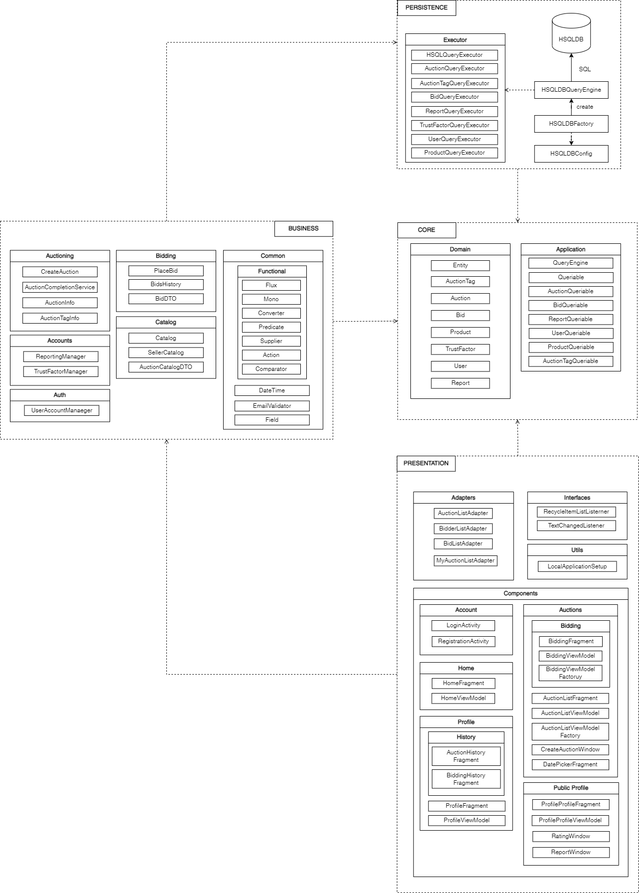
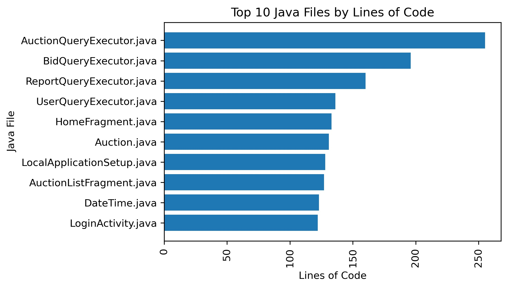

Architecture
The Auction House (Iteration 2)
Architecture

Core
This layer contains enterprise logics that are foundational to the application. It has no dependencies, and every other external layer depends on it. This honors the Dependency Inversion Principle (DIP) and ensures that the domain is loosely coupled to the external layers that are more subject to frequent changes.
application: interfaces to be realized by external layers, such as query engine, and to be dependency-injected in the business layer
domain: entities that capture the all important domain logics
Presentation
This layer contains interactive pages for welcome, registration, login, profile, catalog, auctioning, bidding, and reporting. It gracefully handles exceptions and returns user-friendly results.
account: registration and login UI
home: welcome UI
profile: user info UI
auction: catalog and auctioning
bidding: bidding and bid history
Business
This layer is vertially sliced into 4 major use cases, including catalog, auction, bidding, and account. Each slice contains its own services and DTOs to model a particular use case. This honors the single responsibility principle and promotes high cohesion within each use case boundary. Cross-boundary concerns are placed under common and exception.
account: registration and login
catalog: auctions listing for new users and sellers
bidding: bidding and bid history
auction: auctioning
common: cross-boundary concerns
exception: customized exception
Persistence
This layer contains 2 versions of query engine to execute SQL-based CRUD operations against a relational database. One is the stub used in testing. The other is connected to HSQLDB database to be used in development and production.
queryEngines: implementations of the Queriable interaface in application to be used in Database that interacts with the HSQLDB instance
What we've learned
What worked
- Our team was able to complete the majority of the development tasks, especially the ones required to create a "MVP"
- The project vision is satisfied and our user stories are largely completed
- We had enough technical expertise to execute on our ideas, and we never had to remove a feature due to technical requirements
- We're proud of how the UI turned out, it is clean while also being functional and allows users to access any part of the application with very few inputs
What didn't work
- The project velocity graph shows a trend of over-commiting, because we commited than we could complete in time
- We had to refactor the code, which caused difficulty when we had to merge changes from older branches
What we'd do differently
- Wait for all branches to be merged before we attempt to refactor code
- Commit to less work
- Plan out the architecture in agreement before we start each iteration
Project size
According to our calculations, this project was composed of 72 .java classes. Our total lines of code, not including empty spaces is 4465.
Below is a bar graph which highligths the largest .java files by lines of code

Although the AuctionQueryExecutor, and other QueryExecutor type objects are the largest in the project they did not take the most amount of time to complete. The most time consuming parts of the project were related to the UI.